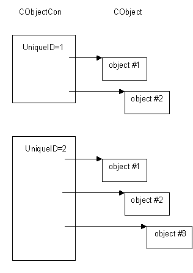

|
| |
All reference counting objects must be held in an object container. An object container acts as a home for a set of related reference counting objects.
An object container is an instance of a CObjectCon class.
After construction, a reference counting object must be added to an object container. Only one instance of a reference counting object can be held by an object container, i.e. each object within an object container must be distinct.
The main characteristics of an object container can be summarized as follows:
they allow a logical collections of reference counting objects to be gathered together; for example, the Kernel has an object container to hold all thread objects, and another object container to hold all semaphore objects
explicitly destroying a reference counting object causes that object to be removed from its object container.
removing a reference counting object from its object container causes that object to be destroyed
each object container is assigned a unique ID on construction. This is an integer that forms part of the identity of all of its contained reference counting objects. All reference counting objects within an object container are associated with the same unique ID. The value of the unique ID can range from 1 to 16,383 (0x3fff).
Object containers are constructed by an object container index, a CObjectConIx type. The maximum number of object containers which may be constructed and held in an object container index is 6,383 (0x3fff).
An object container is implemented as a simple array, where each element of the array is a pointer to a contained reference counting object. Adding a reference counting object to the object container is simply a matter of adding the reference counting object's pointer into the array. The following diagram shows a simple situation where two object containers hold a number of reference counting objects.

The CObjectCon::AddL() function adds a reference counting object to the object container.
The CObjectCon::Remove() function removes a reference counting object from its object container and also destroys that reference counting object.
Conversely, if the reference counting object is destroyed (typically, as a result of successive calls to Close()), it is removed from its object container.
See also:
Copyright ©2002 Symbian Ltd. 6.1-00174 |
|